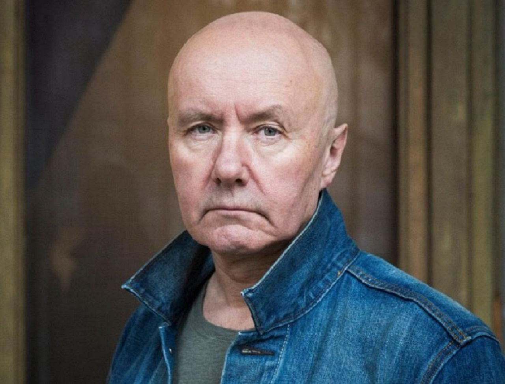

Краткая биография Ирвина уэлша

Ирвин Уэлш
Уэлш родился 27 сентября 1958 года в Лите, портовом пригороде Эдинбурга.
В возрасте четырёх лет переехал с родителями в Эдинбург, где после школы окончил курсы по специальности «электрик».
Работал учеником техника на телевидении, но после удара электрическим током был вынужден сменить работу.
В 1978 году двадцатилетний Уэлш отправился в Лондон, где играл на гитаре и пел в панк-группах The Pubic Lice и Stairway 13.
После серии арестов за незначительные нарушения общественного порядка и условного заключения
за акт вандализма Уэлш решил изменить образ жизни. Он устроился на работу в администрацию района Хакни
и изучал программирование. В середине 1980-х во время строительного бума в Северном Лондоне Уэлш был агентом
по продаже недвижимости, подготавливая дома к продаже. Вскоре он вновь вернулся в Эдинбург,
где получил диплом по информатике в университете Хериота-Уатта.
Ирвин Уэлш
Уэлш родился 27 сентября 1958 года в Лите, портовом пригороде Эдинбурга. В возрасте четырёх лет переехал с родителями в Эдинбург, где после школы окончил курсы по специальности «электрик». Работал учеником техника на телевидении, но после удара электрическим током был вынужден сменить работу. В 1978 году двадцатилетний Уэлш отправился в Лондон, где играл на гитаре и пел в панк-группах The Pubic Lice и Stairway 13. После серии арестов за незначительные нарушения общественного порядка и условного заключения за акт вандализма Уэлш решил изменить образ жизни. Он устроился на работу в администрацию района Хакни и изучал программирование. В середине 1980-х во время строительного бума в Северном Лондоне Уэлш был агентом по продаже недвижимости, подготавливая дома к продаже. Вскоре он вновь вернулся в Эдинбург, где получил диплом по информатике в университете Хериота-Уатта.